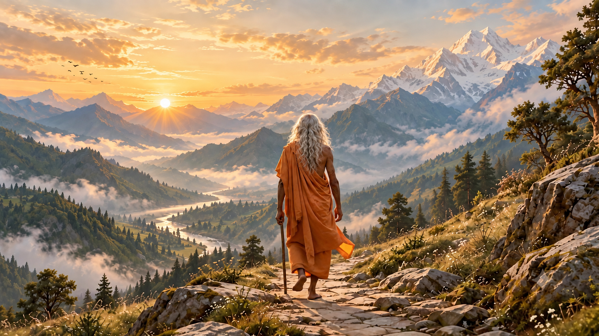

01PROLOGUE · THE CALLINGNEW REFERENCE

View full image ↗Untied hair. An unhurried path.
The open horizon
The same mountain opening, now with silver hair falling freely from crown to shoulders—no knot, band or half-up tie.
- Fully loose silver hair
- Strictly rear-facing
- Grounded, natural steps
UPLOAD THIS IMAGE01-horizon-corrected.png

Read / edit the video prompt
You can adjust this copy before using the Copy prompt button. Reloading restores the original.
Download original prompt (.txt) ↓BEFORE YOU ACCEPT
Watch the crown of his head throughout: loose hair must not reform into a knot. Reject sliding feet, floating staff or a sideways face reveal.
Continuity & optional references
This is website scene 01, the mountain prologue—not the old child-prayer scene 01. Keep the final gaze toward the valley.
SAVE ORIGINAL MP4 AS
01-horizon-fixed.mp4